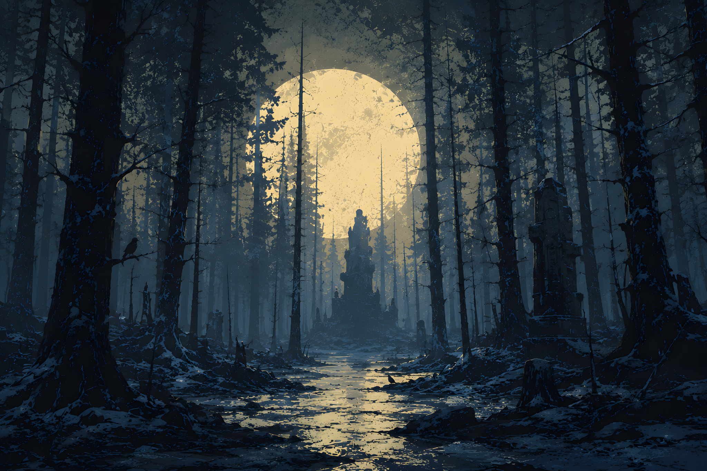
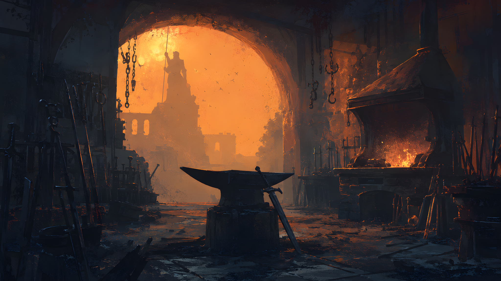

Referencias estéticas · Escenarios
Cuatro referencias aportadas por el usuario el 25 de noviembre de 2026. Imágenes originales sin modificaciones, no canon arquitectónico ni geográfico.

Bosque nocturno
Azul de Prusia, luna ámbar monumental, profundidad por siluetas y textura erosionada.

Callejón medieval
Contraluz bermellón, arquitectura oscura y reflejos de luz sobre el suelo.

Herrería
Interior en penumbra, forja naranja y siluetas de herramientas; perspectiva enmarcada por el arco.

Templo exterior
Arquitectura gótica monumental, escalera ceremonial, cielo rojo y focos cálidos.